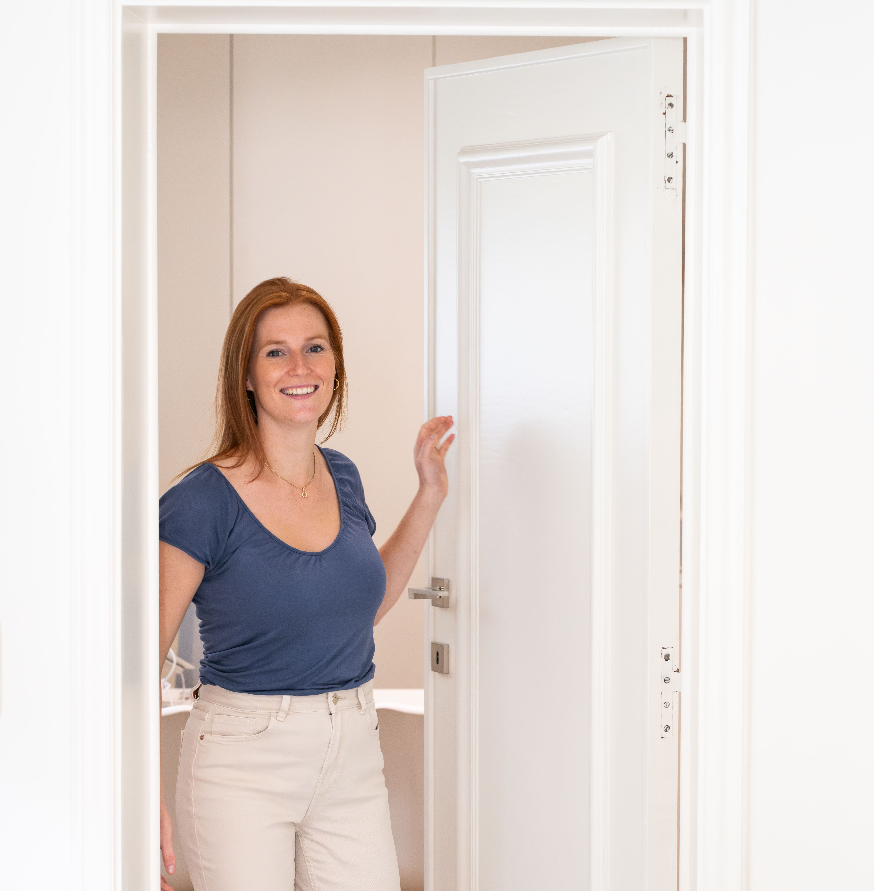
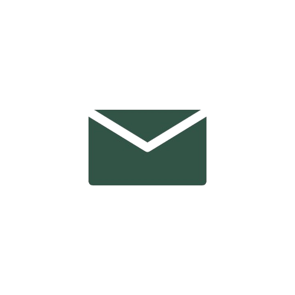
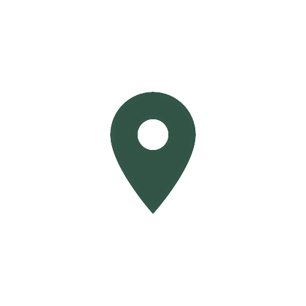

Specialisaties
Welkom bij Manus

Waar lichaam en beweging hand in hand gaan
Stéphanie Michel
Het doel van kinepraktijk Manus? Jouw optimale gezondheid bereiken en behouden via het leveren van hoogwaardige kinesitherapie en manuele therapie. Ik hanteer steeds een persoonlijke aanpak, ondersteund door een uitgebreide vakkennis en effectieve behandelwijze.
Bij Manus staat de patiënt als geheel centraal. Daarom gebruik ik de inzichten uit de manuele therapie, met specifieke aandacht voor de volledige wervelkolom. Zo zorg ik voor een 360°-behandeling van jouw lichaam.
Contact
Openingsuren: elke maandag tot vrijdag van 8u t.e.m. 21u. Enkel op afspraak.
Contactgegevens
-
 +32 473 79 49 73
+32 473 79 49 73
- stephanie@manusoverijse.be
- Brusselsesteenweg 96, 3090 Overijse